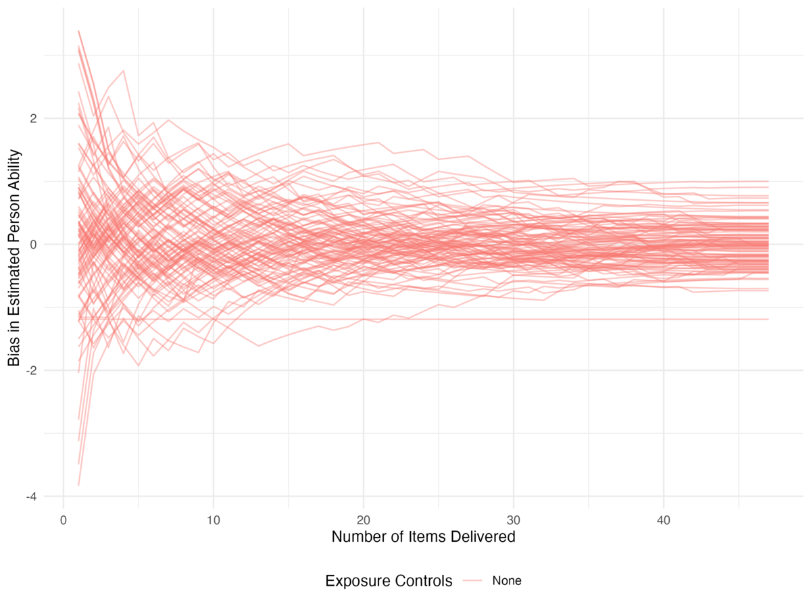
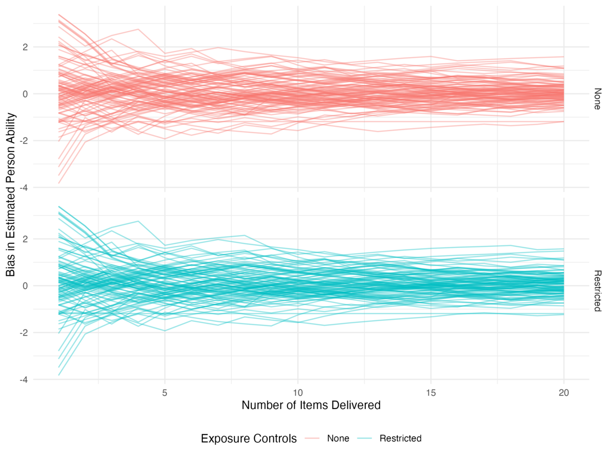

This vignette walks through running two simulations and comparing
them with a few visualizations. We use ggplot2 for the
plots and dplyr/tidyr for reshaping; the
figures here are pre-rendered so the packages are not required to build
the vignette.
No exposure controls
For a baseline, we use the built-in select_max_info()
selector with 1PL data and MLE ability updates:
out_none <- meow(
select_fun = select_max_info,
update_fun = update_theta_mle,
data_loader = data_simple_1pl,
init = NULL,
fix = "item"
)The results data frame has one row per iteration, with
an estimate and a bias column for every parameter, so we can track how
estimates evolve over the test.
RMSE of person abilities
results_none <- out_none$results |>
mutate(control = "None")
results_none |>
select(iter, control, starts_with("pers_")) |>
select(iter, control, ends_with("_bias")) |>
pivot_longer(ends_with("_bias"), names_to = "person", values_to = "bias") |>
group_by(iter, control) |>
summarize(rmse = sqrt(mean(bias^2)), .groups = "drop") |>
ggplot(aes(x = iter, y = rmse, color = control)) +
geom_line() +
labs(x = "Number of Items Delivered", y = "RMSE for Person Ability",
color = "Exposure Controls") +
theme_minimal() +
theme(legend.position = "bottom")
Individual bias trajectories are also informative:
results_none |>
select(iter, control, starts_with("pers_")) |>
select(iter, control, ends_with("_bias")) |>
pivot_longer(ends_with("_bias"), names_to = "person", values_to = "bias") |>
ggplot(aes(x = iter, y = bias, color = control, group = person)) +
geom_line(alpha = 0.4) +
labs(x = "Number of Items Delivered", y = "Bias in Estimated Person Ability",
color = "Exposure Controls") +
theme_minimal() +
theme(legend.position = "bottom")
Restricting item exposure
To add a simple exposure control, we write a custom selector. The
diagonal of the adjacency matrix holds each item’s exposure count, so we
convert that to an exposure rate and refuse to administer items whose
rate exceeds r_max, choosing the most informative item
among those that remain.
select_rest <- function(pers, item, R, admin, adj_mat = NULL, r_max = 0.025) {
if (!any(admin != 0)) {
admin[, seq_len(min(5, ncol(admin)))] <- 1L
return(admin)
}
# exposure rate for every item
exposures <- diag(adj_mat)
r_obs <- exposures / sum(exposures)
allowed <- which(r_obs < r_max)
# 2PL information for every respondent-item combination
lin <- sweep(outer(pers$theta, item$b, "-"), 2, item$a, "*")
P <- stats::plogis(lin)
info <- sweep(P * (1 - P), 2, item$a^2, "*")
for (i in which(rowSums(admin == 0) > 0)) {
candidates <- intersect(which(admin[i, ] == 0), allowed)
if (length(candidates) == 0) next # all permissible items used up
admin[i, candidates[which.max(info[i, candidates])]] <- 1L
}
admin
}Pass a non-default exposure rate through
select_args:
out_rest <- meow(
select_fun = select_rest,
update_fun = update_theta_mle,
data_loader = data_simple_1pl,
init = NULL,
fix = "item",
select_args = list(r_max = 0.02)
)We can then compare RMSE across the two methods:
results_rest <- out_rest$results |>
mutate(control = "Restricted")
results <- bind_rows(results_none, results_rest)
results |>
select(iter, control, starts_with("pers_")) |>
select(iter, control, ends_with("_bias")) |>
pivot_longer(ends_with("_bias"), names_to = "person", values_to = "bias") |>
group_by(iter, control) |>
summarize(rmse = sqrt(mean(bias^2)), .groups = "drop") |>
ggplot(aes(x = iter, y = rmse, color = control)) +
geom_line() +
labs(x = "Number of Items Delivered", y = "RMSE for Person Ability",
color = "Exposure Controls") +
theme_minimal() +
theme(legend.position = "bottom")
results |>
select(iter, control, starts_with("pers_")) |>
select(iter, control, ends_with("_bias")) |>
pivot_longer(ends_with("_bias"), names_to = "person", values_to = "bias") |>
filter(iter <= 20) |>
ggplot(aes(x = iter, y = bias, color = control, group = person)) +
geom_line(alpha = 0.4) +
facet_grid(control ~ .) +
labs(x = "Number of Items Delivered", y = "Bias in Estimated Person Ability",
color = "Exposure Controls") +
theme_minimal() +
theme(legend.position = "bottom")
Visualizing the adjacency matrix
The list of adjacency matrices returned in adj_mats
makes it easy to build dynamic network visualizations of item
utilization with statnet and ndtv.
library(statnet)
library(ndtv)
rest_nets <- lapply(out_rest$adj_mats, network)
dyn_rest <- networkDynamic(network.list = rest_nets)
render.d3movie(
dyn_rest,
usearrows = FALSE,
main = "Maximum Fisher Information Item Selection",
vertex.cex = abs(out_rest$item_tru$b),
vertex.col = ifelse(out_rest$item_tru$b < 0, "dodgerblue", "tomato")
)